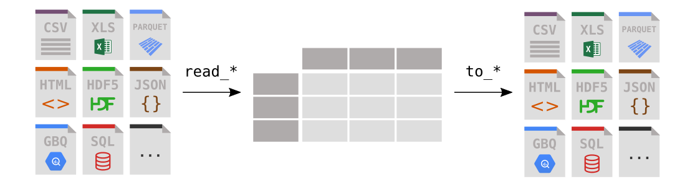

6 Reading Data
6.1 Types of Data: Structured vs. Unstructured
Understanding the format of your data is crucial before you can analyze it effectively. Data exists in two primary formats:
6.1.1 Structured Data
Structured data is organized in a tabular format with clearly defined relationships between data elements. Key characteristics include:
- Rows represent individual observations (records or data points)
- Columns represent variables (attributes or features)
- Data follows a consistent schema or format
- Easy to search, query, and analyze using standard tools
Example: The dataset below contains movie information where each row represents one movie (observation) and each column contains specific attributes like title, rating, or budget (variables). Since all data in a row relates to the same movie, this is also called relational data.
| Title | US Gross | Production Budget | Release Date | Major Genre | Creative Type | Rotten Tomatoes Rating | IMDB Rating | |
|---|---|---|---|---|---|---|---|---|
| 0 | The Shawshank Redemption | 28241469 | 25000000 | Sep 23 1994 | Drama | Fiction | 88 | 9.2 |
| 1 | Inception | 285630280 | 160000000 | Jul 16 2010 | Horror/Thriller | Fiction | 87 | 9.1 |
| 2 | One Flew Over the Cuckoo's Nest | 108981275 | 4400000 | Nov 19 1975 | Comedy | Fiction | 96 | 8.9 |
| 3 | The Dark Knight | 533345358 | 185000000 | Jul 18 2008 | Action/Adventure | Fiction | 93 | 8.9 |
| 4 | Schindler's List | 96067179 | 25000000 | Dec 15 1993 | Drama | Non-Fiction | 97 | 8.9 |
Common formats: CSV files, Excel spreadsheets, SQL databases
6.1.2 Unstructured Data
Unstructured data lacks a predefined organizational structure, making it more challenging to analyze with traditional methods.
Examples include: Text documents, images, audio files, videos, social media posts, sensor data
While harder to analyze directly, unstructured data can often be converted into structured formats for analysis (e.g., extracting features from images or sentiment scores from text).
In this sequence, we will focus on analyzing structured data.
6.2 Introduction to Pandas
Pandas is Python’s premier library for data manipulation and analysis. Think of it as Excel for Python - it provides powerful tools for working with tabular data (like spreadsheets) and supports reading from various file formats:
- CSV (Comma-Separated Values)
- Excel spreadsheets (.xlsx, .xls)
- JSON (JavaScript Object Notation)
- HTML tables
- SQL databases
- And many more!
6.3 Reading CSV Files with Pandas
6.3.1 Understanding CSV Files
CSV (Comma-Separated Values) is the most popular format for storing structured data. Here’s what makes CSV files special:
- Simple structure: Each row represents one record/observation
- Comma delimiter: Values within a row are separated by commas
- Plain text: Human-readable and lightweight
- Universal compatibility: Supported by virtually all data tools
💡 Pro Tip: When you open a CSV file in Excel, the commas are automatically converted to column separators, so you won’t see them visually!
6.3.2 CSV File Structure Example
Here’s a sample CSV file containing daily COVID-19 data for Italy:
date,new_cases,new_deaths,new_tests
2020-04-21,2256.0,454.0,28095.0
2020-04-22,2729.0,534.0,44248.0
2020-04-23,3370.0,437.0,37083.0
2020-04-24,2646.0,464.0,95273.0
2020-04-25,3021.0,420.0,38676.0
2020-04-26,2357.0,415.0,24113.0
2020-04-27,2324.0,260.0,26678.0
2020-04-28,1739.0,333.0,37554.0
...Structure breakdown: - Header row: Column names (date, new_cases, new_deaths, new_tests) - Data rows: Each row contains values for one day - Delimiter: Commas separate each value within a row
6.3.3 Getting Started: Importing Pandas
Before we can work with data, we need to import the pandas library. By convention, pandas is imported with the alias pd - this is a universal practice that makes your code more readable and concise.
Why use pd?
- Shorter syntax:
pd.read_csv()instead ofpandas.read_csv() - Industry standard: Everyone in the data science community uses this alias
- Cleaner code: Makes your scripts more readable
import pandas as pd
import os6.3.4 Loading Data with pd.read_csv()
What is pd.read_csv()?
The pd.read_csv() function is your gateway to loading CSV data into Python. It converts CSV files into a pandas DataFrame - think of it as a powerful, interactive spreadsheet that you can manipulate with code.
Key Features:
- Automatic data type detection: Pandas intelligently guesses column types (numbers, text, dates)
- Header recognition: Automatically uses the first row as column names
- Missing data handling: Gracefully handles empty cells
- Flexible parsing: Can handle various CSV formats and delimiters
movie_ratings = pd.read_csv('./datasets/movie_ratings.csv')
movie_ratings.head()| Title | US Gross | Worldwide Gross | Production Budget | Release Date | MPAA Rating | Source | Major Genre | Creative Type | IMDB Rating | IMDB Votes | |
|---|---|---|---|---|---|---|---|---|---|---|---|
| 0 | Opal Dreams | 14443 | 14443 | 9000000 | Nov 22 2006 | PG/PG-13 | Adapted screenplay | Drama | Fiction | 6.5 | 468 |
| 1 | Major Dundee | 14873 | 14873 | 3800000 | Apr 07 1965 | PG/PG-13 | Adapted screenplay | Western/Musical | Fiction | 6.7 | 2588 |
| 2 | The Informers | 315000 | 315000 | 18000000 | Apr 24 2009 | R | Adapted screenplay | Horror/Thriller | Fiction | 5.2 | 7595 |
| 3 | Buffalo Soldiers | 353743 | 353743 | 15000000 | Jul 25 2003 | R | Adapted screenplay | Comedy | Fiction | 6.9 | 13510 |
| 4 | The Last Sin Eater | 388390 | 388390 | 2200000 | Feb 09 2007 | PG/PG-13 | Adapted screenplay | Drama | Fiction | 5.7 | 1012 |
Understanding the DataFrame Display:
When you display a DataFrame, you’ll notice several key components:
The Index Column (leftmost): The first column shows row indices (0, 1, 2, 3…). When you create a DataFrame without specifying an index, pandas automatically assigns a RangeIndex, which is a sequence of integers starting from 0.
Column Headers: The top row shows column names from your CSV file
Data Cells: The intersection of rows and columns contains your actual data
Data Types: Pandas automatically detects whether columns contain numbers, text, dates, etc.
💡 Key Point: The index is not part of your original data - it’s added by pandas to help identify and access rows efficiently.
# Examine the DataFrame index in detail
print("📋 DataFrame Index Information:")
print(f"Index type: {type(movie_ratings.index)}")
print(f"Index values: {movie_ratings.index}")
print(f"Index range: {movie_ratings.index[0]} to {movie_ratings.index[-1]}")
print(f"Total rows: {len(movie_ratings.index)}")
# Show the index as a list for first 10 rows
print(f"\nFirst 10 index values: {movie_ratings.index[:10].tolist()}")📋 DataFrame Index Information:
Index type: <class 'pandas.core.indexes.range.RangeIndex'>
Index values: RangeIndex(start=0, stop=2228, step=1)
Index range: 0 to 2227
Total rows: 2228
First 10 index values: [0, 1, 2, 3, 4, 5, 6, 7, 8, 9]6.3.5 Indexing
Alternatively, we can use the index_col parameter in the pd.read_csv() function to set a specific column as the index when reading a CSV file in pandas. This allows us to directly specify which column should be used as the index of the resulting DataFrame.
movie_ratings = pd.read_csv('./datasets/movie_ratings.csv', index_col='Title')
movie_ratings.head()| US Gross | Worldwide Gross | Production Budget | Release Date | MPAA Rating | Source | Major Genre | Creative Type | IMDB Rating | IMDB Votes | |
|---|---|---|---|---|---|---|---|---|---|---|
| Title | ||||||||||
| Opal Dreams | 14443 | 14443 | 9000000 | Nov 22 2006 | PG/PG-13 | Adapted screenplay | Drama | Fiction | 6.5 | 468 |
| Major Dundee | 14873 | 14873 | 3800000 | Apr 07 1965 | PG/PG-13 | Adapted screenplay | Western/Musical | Fiction | 6.7 | 2588 |
| The Informers | 315000 | 315000 | 18000000 | Apr 24 2009 | R | Adapted screenplay | Horror/Thriller | Fiction | 5.2 | 7595 |
| Buffalo Soldiers | 353743 | 353743 | 15000000 | Jul 25 2003 | R | Adapted screenplay | Comedy | Fiction | 6.9 | 13510 |
| The Last Sin Eater | 388390 | 388390 | 2200000 | Feb 09 2007 | PG/PG-13 | Adapted screenplay | Drama | Fiction | 5.7 | 1012 |
Let’s check out the index again
movie_ratings.indexIndex(['Opal Dreams', 'Major Dundee', 'The Informers', 'Buffalo Soldiers',
'The Last Sin Eater', 'The City of Your Final Destination', 'The Claim',
'Texas Rangers', 'Ride With the Devil', 'Karakter',
...
'A Cinderella Story', 'D-War', 'Sinbad: Legend of the Seven Seas',
'Hoodwinked', 'First Knight', 'King Arthur', 'Mulan', 'Robin Hood',
'Robin Hood: Prince of Thieves', 'Spiceworld'],
dtype='object', name='Title', length=2228)6.3.5.1 Indexing with set_index() and reset_index()
- Use
set_index()to assign an existing column as the DataFrame’s index.
- Use
reset_index()to revert back to the default integer index.
movie_ratings.reset_index(inplace=True)movie_ratings.indexRangeIndex(start=0, stop=2228, step=1)movie_ratings.set_index("Title").head()| US Gross | Worldwide Gross | Production Budget | Release Date | MPAA Rating | Source | Major Genre | Creative Type | IMDB Rating | IMDB Votes | |
|---|---|---|---|---|---|---|---|---|---|---|
| Title | ||||||||||
| Opal Dreams | 14443 | 14443 | 9000000 | Nov 22 2006 | PG/PG-13 | Adapted screenplay | Drama | Fiction | 6.5 | 468 |
| Major Dundee | 14873 | 14873 | 3800000 | Apr 07 1965 | PG/PG-13 | Adapted screenplay | Western/Musical | Fiction | 6.7 | 2588 |
| The Informers | 315000 | 315000 | 18000000 | Apr 24 2009 | R | Adapted screenplay | Horror/Thriller | Fiction | 5.2 | 7595 |
| Buffalo Soldiers | 353743 | 353743 | 15000000 | Jul 25 2003 | R | Adapted screenplay | Comedy | Fiction | 6.9 | 13510 |
| The Last Sin Eater | 388390 | 388390 | 2200000 | Feb 09 2007 | PG/PG-13 | Adapted screenplay | Drama | Fiction | 5.7 | 1012 |
movie_ratings.indexRangeIndex(start=0, stop=2228, step=1)The
indexcan act like a primary key.It controls how
.loc[], slicing, and filtering behave.Choosing a good index (e.g., IDs, timestamps) makes subsetting much easier and more readable.
The built-in python function type can be used to check the dataype of an object:
type(movie_ratings)pandas.core.frame.DataFrameThe Result: A DataFrame
6.3.6 Understanding Pandas Data Structures
Before diving deeper into data manipulation, it’s crucial to understand the two fundamental data structures that pandas provides. Think of these as the building blocks for all data science operations.
6.3.7 Series - Your First Pandas Data Structure
A pandas.Series is like a smart column of data - imagine a single column from an Excel spreadsheet, but with superpowers!
📝 Definition: A Series is a one-dimensional array of data with an associated index (labels for each data point).
🔍 Key Characteristics:
| Feature | Description | Example |
|---|---|---|
| One-dimensional | Holds data in a single column/row | [85, 92, 78, 95] |
| Indexed | Each element has a label/index | ['Alice', 'Bob', 'Carol', 'David'] |
| Homogeneous | Ideally same data type (but flexible) | All numbers or all text |
| Size immutable | Fixed size once created (values can change) | 4 elements stay 4 elements |
** Think of it as**: A single column from your DataFrame with smart labeling capabilities.
# 🎬 Creating a Series from the 'Title' column
print(" Extracting a Series from our DataFrame:")
print("=" * 50)
movie_titles = movie_ratings['Title']
print(" Movie Titles Series (first 10):")
print(movie_titles.head(10))
print()
# Let's explore what we just created
print(" Series Details:")
print(f" Type: {type(movie_titles)}")
print(f" Shape: {movie_titles.shape}")
print(f" Size: {movie_titles.size}")
print(f" Data Type: {movie_titles.dtype}")
print(f" Name: {movie_titles.name}") Extracting a Series from our DataFrame:
==================================================
Movie Titles Series (first 10):
0 Opal Dreams
1 Major Dundee
2 The Informers
3 Buffalo Soldiers
4 The Last Sin Eater
5 The City of Your Final Destination
6 The Claim
7 Texas Rangers
8 Ride With the Devil
9 Karakter
Name: Title, dtype: object
Series Details:
Type: <class 'pandas.core.series.Series'>
Shape: (2228,)
Size: 2228
Data Type: object
Name: Title6.3.7.1 DataFrame: Two-Dimensional Data
A DataFrame is the star of pandas - it’s like a complete spreadsheet or database table:
Key Characteristics:
- Two-dimensional: Organized in rows and columns
- Heterogeneous: Different columns can have different data types
- Labeled axes: Both rows (index) and columns have names/labels
- Flexible: Easy to filter, sort, group, and analyze
Structure:
- Rows (Index): Each row represents one observation (e.g., one movie, customer, transaction)
- Columns: Each column represents one variable/feature (e.g., title, price, rating, date)
- Cells: Individual data points where rows and columns intersect
Default Behavior:
- Row indices: Automatically numbered 0, 1, 2, 3… (but customizable)
- Column names: Taken from the first row of your CSV file (the header)
- Data types: Automatically detected (numbers, text, dates, etc.)
6.4 DataFrame Exploration: Attributes and Methods
Now that you understand what DataFrames and Series are, let’s learn how to explore and understand your data. Think of these tools as your data detective kit!
6.4.1 Attributes vs Methods: What’s the Difference?
| Type | How to Use | What It Does | Example |
|---|---|---|---|
| Attributes | df.attribute (no parentheses) |
Shows properties | df.shape |
| Methods | df.method() (with parentheses) |
Performs actions | df.head() |
💡 Pro Tip: Use
dir(your_dataframe)to see all available attributes and methods!
6.4.2 Essential DataFrame Attributes
These attributes help you quickly understand your dataset’s structure and characteristics.
6.4.2.1 Data Types with dtypes
What it shows: The data type of each column
Why it matters: Understanding data types helps you:
- ✅ Identify if numbers are stored as text (and need conversion)
- ✅ Know which operations work with each column
- ✅ Optimize memory usage and performance
- ✅ Catch data quality issues early
# 🔍 Examine data types of all columns
print("📊 Data Types in Our Movie Dataset:")
print("=" * 40)
print(movie_ratings.dtypes)
print()
# Count how many columns of each type we have
print("📈 Data Type Summary:")
dtype_counts = movie_ratings.dtypes.value_counts()
for dtype, count in dtype_counts.items():
print(f" {dtype}: {count} columns")Title object
US Gross int64
Worldwide Gross int64
Production Budget int64
Release Date object
MPAA Rating object
Source object
Major Genre object
Creative Type object
IMDB Rating float64
IMDB Votes int64
dtype: object6.4.2.2 Understanding Pandas Data Types
| Pandas Type | Python Equivalent | Real-World Example | When You’ll See It |
|---|---|---|---|
| object | string/mixed | Movie titles, categories, mixed data | Text columns, categorical data |
| int64 | int | Year (2023), count (50 movies) | Whole numbers, counts, IDs |
| float64 | float | Rating (7.5), budget ($50.5M) | Decimal numbers, measurements |
| bool | True/False | Is_Popular, Has_Sequel | Yes/no questions |
| datetime64 | datetime | Release dates, timestamps | Dates and times |
🚨 Common Data Type Issues:
- Numbers stored as
object
: Often means there are non-numeric characters (like$
or,
) - Dates as
object
: Need to convert usingpd.to_datetime() - Missing values in integers: Forces conversion to float64
6.4.2.3 Dataset Dimensions with shape
What it shows: Returns dimensions as (rows, columns)
Why it matters:
- Understand your dataset size at a glance
- Know if you have a
tall
(many rows) orwide
(many columns) dataset - Estimate memory requirements
- Spot issues (e.g., fewer rows than expected after filtering)
# Check the dimensions of our movie dataset
print(f"Dataset shape: {movie_ratings.shape}")
print(f"Number of rows (movies): {movie_ratings.shape[0]}")
print(f"Number of columns (features): {movie_ratings.shape[1]}")Dataset shape: (2228, 11)
Number of rows (movies): 2228
Number of columns (features): 116.4.2.3.1 columns
Purpose: Returns the column names as an Index object
Why useful: See what variables/features are available in your dataset
# View all column names
print("Available columns:")
for i, col in enumerate(movie_ratings.columns, 1):
print(f"{i}. {col}")Available columns:
1. Title
2. US Gross
3. Worldwide Gross
4. Production Budget
5. Release Date
6. MPAA Rating
7. Source
8. Major Genre
9. Creative Type
10. IMDB Rating
11. IMDB Votes6.4.2.3.2 index
Purpose: Returns the row labels (index) of the DataFrame
Why useful: Understand how rows are labeled and indexed
# Examine the index
print(f"Index type: {type(movie_ratings.index)}")
print(f"Index range: {movie_ratings.index[0]} to {movie_ratings.index[-1]}")
print(f"First 10 index values: {movie_ratings.index[:10].tolist()}")Index type: <class 'pandas.core.indexes.range.RangeIndex'>
Index range: 0 to 2227
First 10 index values: [0, 1, 2, 3, 4, 5, 6, 7, 8, 9]6.4.2.4 Essential DataFrame Methods
6.4.2.4.1 info()
Purpose: Provides a comprehensive summary of the DataFrame
Returns: Information about data types, non-null counts, and memory usage
# Get comprehensive dataset information
movie_ratings.info()<class 'pandas.core.frame.DataFrame'>
RangeIndex: 2228 entries, 0 to 2227
Data columns (total 11 columns):
# Column Non-Null Count Dtype
--- ------ -------------- -----
0 Title 2228 non-null object
1 US Gross 2228 non-null int64
2 Worldwide Gross 2228 non-null int64
3 Production Budget 2228 non-null int64
4 Release Date 2228 non-null object
5 MPAA Rating 2228 non-null object
6 Source 2228 non-null object
7 Major Genre 2228 non-null object
8 Creative Type 2228 non-null object
9 IMDB Rating 2228 non-null float64
10 IMDB Votes 2228 non-null int64
dtypes: float64(1), int64(4), object(6)
memory usage: 191.6+ KBWhat info() tells you:
- Data types for each column
- Non-null count (helps identify missing data)
- Memory usage (useful for large datasets)
- Total entries and columns
6.4.2.4.2 describe()
Purpose: Generate descriptive statistics for numerical columns
Returns: Count, mean, std, min, 25%, 50%, 75%, max for each numeric column
# Get statistical summary of numerical columns
movie_ratings.describe()| US Gross | Worldwide Gross | Production Budget | IMDB Rating | IMDB Votes | |
|---|---|---|---|---|---|
| count | 2.228000e+03 | 2.228000e+03 | 2.228000e+03 | 2228.000000 | 2228.000000 |
| mean | 5.076370e+07 | 1.019370e+08 | 3.816055e+07 | 6.239004 | 33585.154847 |
| std | 6.643081e+07 | 1.648589e+08 | 3.782604e+07 | 1.243285 | 47325.651561 |
| min | 0.000000e+00 | 8.840000e+02 | 2.180000e+02 | 1.400000 | 18.000000 |
| 25% | 9.646188e+06 | 1.320737e+07 | 1.200000e+07 | 5.500000 | 6659.250000 |
| 50% | 2.838649e+07 | 4.266892e+07 | 2.600000e+07 | 6.400000 | 18169.000000 |
| 75% | 6.453140e+07 | 1.200000e+08 | 5.300000e+07 | 7.100000 | 40092.750000 |
| max | 7.601676e+08 | 2.767891e+09 | 3.000000e+08 | 9.200000 | 519541.000000 |
Key Statistics Explained:
- count: Number of non-missing values
- mean: Average value
- std: Standard deviation (measure of spread)
- min/max: Smallest and largest values
- 25%, 50%, 75%: Quartiles (percentiles)
💡 Tip: Use
describe(include='all')to include non-numeric columns in the summary!
6.4.2.4.3 head() and tail()
Purpose: View the first or last few rows of your dataset
Default: Shows 5 rows, but you can specify any number
# View first 3 rows
print("First 3 movies:")
movie_ratings.head(3)First 3 movies:| Title | US Gross | Worldwide Gross | Production Budget | Release Date | MPAA Rating | Source | Major Genre | Creative Type | IMDB Rating | IMDB Votes | |
|---|---|---|---|---|---|---|---|---|---|---|---|
| 0 | Opal Dreams | 14443 | 14443 | 9000000 | Nov 22 2006 | PG/PG-13 | Adapted screenplay | Drama | Fiction | 6.5 | 468 |
| 1 | Major Dundee | 14873 | 14873 | 3800000 | Apr 07 1965 | PG/PG-13 | Adapted screenplay | Western/Musical | Fiction | 6.7 | 2588 |
| 2 | The Informers | 315000 | 315000 | 18000000 | Apr 24 2009 | R | Adapted screenplay | Horror/Thriller | Fiction | 5.2 | 7595 |
# View last 3 rows
print("Last 3 movies:")
movie_ratings.tail(3)Last 3 movies:| Title | US Gross | Worldwide Gross | Production Budget | Release Date | MPAA Rating | Source | Major Genre | Creative Type | IMDB Rating | IMDB Votes | |
|---|---|---|---|---|---|---|---|---|---|---|---|
| 2225 | Robin Hood | 105269730 | 310885538 | 210000000 | May 14 2010 | PG/PG-13 | Adapted screenplay | Action/Adventure | Fiction | 6.9 | 34501 |
| 2226 | Robin Hood: Prince of Thieves | 165493908 | 390500000 | 50000000 | Jun 14 1991 | PG/PG-13 | Adapted screenplay | Action/Adventure | Fiction | 6.7 | 54480 |
| 2227 | Spiceworld | 29342592 | 56042592 | 25000000 | Jan 23 1998 | PG/PG-13 | Adapted screenplay | Comedy | Fiction | 2.9 | 18010 |
6.4.2.4.4 sample()
Purpose: Get a random sample of rows from your DataFrame Why useful: Explore data patterns without bias toward top/bottom rows
# Get 5 random movies from the dataset
print("Random sample of 5 movies:")
movie_ratings.sample(5)6.4.2.5 Quick Reference: Most Used Attributes & Methods
| Attribute/Method | Purpose | Example Usage |
|---|---|---|
.shape |
Get dimensions (rows, cols) | df.shape |
.dtypes |
Check data types | df.dtypes |
.columns |
View column names | df.columns |
.info() |
Comprehensive overview | df.info() |
.describe() |
Statistical summary | df.describe() |
.head(n) |
First n rows | df.head(10) |
.tail(n) |
Last n rows | df.tail(3) |
.sample(n) |
Random n rows | df.sample(5) |
6.5 Putting It All Together: Understanding Pandas Data Structures
Now that we’ve explored DataFrames and Series in detail, let’s consolidate your understanding with a comprehensive comparison and key takeaways.
6.5.1 DataFrame vs Series: The Complete Picture
| Aspect | DataFrame | Series |
|---|---|---|
| Dimensions | 2D (rows × columns) | 1D (single column) |
| Purpose | Complete dataset/table | Single variable/column |
| Structure | Multiple columns, each can be different type | Single column of one data type |
| Access | df['column'] or df.column |
Direct indexing series[0] |
| Example | Entire movie database | Just the Ratingcolumn |
| Relationship | Contains multiple Series | One column extracted from DataFrame |
6.5.2 Key Concepts You Now Understand
6.5.2.1 DataFrames are Collections of Series
# When you do this:
ratings = movie_ratings['Rating'] # You get a Series
titles = movie_ratings['Title'] # You get another Series
# The DataFrame is made up of these Series working together!6.5.2.3 Data Types Matter
- Numerical columns (
int64,float64) → Mathematical operations - Text columns (
object) → String operations, categories
- Date columns (
datetime64) → Time-based analysis - Boolean columns (
bool) → True/False filtering
6.5.3 What You Can Do Now
✅ Load data from CSV files into DataFrames
✅ Understand the structure using .shape, .dtypes, .info()
✅ Extract specific columns as Series for focused analysis
✅ Identify data quality issues through data type inspection
✅ Navigate between 1D and 2D data structures confidently
6.6 Writing Data to CSV Files
After cleaning, analyzing, or transforming your data, you’ll often need to save your results for future use or sharing. Pandas makes this easy with the to_csv() method.
6.6.1 Basic CSV Export
The simplest way to export a DataFrame is using the to_csv() method with just a filename:
# Basic export - saves DataFrame to CSV file
movie_ratings.to_csv('./datasets/movie_ratings_exported.csv')
print("✅ Data exported successfully!")✅ Data exported successfully!# Verify the file was created
if './datasets/movie_ratings_exported.csv' in [f'./datasets/{f}' for f in os.listdir('./datasets')]:
print("✅ File successfully exported!")
else:
print("❌ Export failed")✅ File successfully exported!6.6.2 Important CSV Export Parameters
By default, pandas includes row indices in the exported CSV. Often you don’t want this:
The to_csv() method has many useful parameters to customize your output:
6.6.2.1 Index Control
# Export WITHOUT row indices (most common)
movie_ratings.to_csv('./datasets/movies_no_index.csv', index=False)
# Export WITH row indices (default behavior)
movie_ratings.to_csv('./datasets/movies_with_index.csv', index=True)6.6.2.2 Column Selection
Export only specific columns:
# Export only selected columns
columns_to_export = ['Title', 'IMDB Rating', 'Worldwide Gross']
movie_ratings[columns_to_export].to_csv('./datasets/movies_selected_columns.csv', index=False)6.6.2.3 Custom Separators
Change the delimiter (useful for different regional standards):
# Use semicolon instead of comma (common in European locales)
movie_ratings.to_csv('./datasets/movies_semicolon.csv', sep=';', index=False)
# Use tab separator (creates TSV file)
movie_ratings.to_csv('./datasets/movies_tab.txt', sep='\t', index=False)6.6.2.4 Handling Missing Values
Control how missing/null values are represented:
# Replace NaN values with custom text
movie_ratings.to_csv('./datasets/movies_custom_na.csv',
index=False,
na_rep='Missing')6.6.2.5 Encoding Specification
Ensure proper character encoding (important for international data):
# Specify UTF-8 encoding (recommended for international characters)
movie_ratings.to_csv('./datasets/movies_utf8.csv',
index=False,
encoding='utf-8')6.6.3 Best Practices for CSV Export
| Practice | Why Important | Example |
|---|---|---|
Always use index=False |
Prevents unnecessary row numbers | df.to_csv('file.csv', index=False) |
| Specify encoding | Ensures international characters display correctly | encoding='utf-8' |
| Use descriptive filenames | Makes files easy to identify later | 'cleaned_movie_data_2024.csv' |
| Check file paths | Avoid overwriting important files | Use relative or absolute paths carefully |
| Handle missing data | Define how NaN values should appear | na_rep='N/A' or na_rep='' |
6.6.4 Complete Export Example
Here’s a comprehensive example combining multiple parameters:
# Professional CSV export with all best practices
export_filename = './datasets/movie_analysis_final.csv'
# Select relevant columns for export
columns_for_analysis = [
'Title', 'IMDB Rating', 'IMDB Votes',
'US Gross', 'Worldwide Gross', 'Production Budget'
]
# Export with professional settings
movie_ratings[columns_for_analysis].to_csv(
export_filename,
index=False, # No row numbers
encoding='utf-8', # International characters
na_rep='N/A', # Clear missing value indicator
float_format='%.2f' # 2 decimal places for numbers
)
print(f"✅ Analysis data exported to: {export_filename}")
print(f"📊 Exported {len(columns_for_analysis)} columns for {len(movie_ratings)} movies")✅ Analysis data exported to: ./datasets/movie_analysis_final.csv
📊 Exported 6 columns for 2228 movies6.6.5 Verifying Your Export
Always verify your exported data looks correct:
# Read back the exported file to verify
verification_df = pd.read_csv(export_filename)
print(f"\n Exported dimensions: {verification_df.shape}")
print(" Exported file preview:")
verification_df.head(3)
Exported dimensions: (2228, 6)
Exported file preview:| Title | IMDB Rating | IMDB Votes | US Gross | Worldwide Gross | Production Budget | |
|---|---|---|---|---|---|---|
| 0 | Opal Dreams | 6.5 | 468 | 14443 | 14443 | 9000000 |
| 1 | Major Dundee | 6.7 | 2588 | 14873 | 14873 | 3800000 |
| 2 | The Informers | 5.2 | 7595 | 315000 | 315000 | 18000000 |
6.7 Reading Other Data Formats
While CSV is the most popular format for structured data, real-world data comes in many different formats. As a data analyst, you’ll frequently encounter various file types and data sources that require different reading approaches.
Common Data Formats Overview
| Format | Extension | Use Case | Pandas Function |
|---|---|---|---|
| CSV | .csv |
Most common tabular data | pd.read_csv() |
| Text | .txt |
Tab-separated or custom delimiters | pd.read_csv() with sep parameter |
| JSON | .json |
API data, nested structures | pd.read_json() |
| Excel | .xlsx, .xls |
Spreadsheet data | pd.read_excel() |
| URLs | Various | Live data from web APIs | Various functions |
In this section, we’ll explore how to:
- Read text files with different delimiters (tabs, semicolons, etc.)
- Handle JSON data from APIs and web services
- Access live data directly from URLs and web pages
💡 Key Insight: The same
pd.read_csv()function can read many text-based formats by adjusting parameters!
6.7.1 Reading Text Files (.txt)
Text files offer maximum flexibility for storing tabular data with custom delimiters.
Key Differences from CSV:
CSV files: Always use commas (
,) as delimitersLet’s read a file where values are separated by tab characters:Text files: Can use any character as a delimiter
6.7.1.1 Reading Tab-Separated Files
Common Delimiters in Text Files:
- Space (
) → Simple space-separated files - Tab character (
\t) → Creates TSV (Tab-Separated Values) files- Pipe symbol (|) → Used when data contains commas - Semicolon (
;) → Common in European data files
# Read tab-separated file using \t as separator
# Note: We still use pd.read_csv() but specify the separator
movie_ratings_txt = pd.read_csv('./datasets/movie_ratings.txt', sep='\t')
movie_ratings_txt.head()| Unnamed: 0 | Title | US Gross | Worldwide Gross | Production Budget | Release Date | MPAA Rating | Source | Major Genre | Creative Type | IMDB Rating | IMDB Votes | |
|---|---|---|---|---|---|---|---|---|---|---|---|---|
| 0 | 0 | Opal Dreams | 14443 | 14443 | 9000000 | Nov 22 2006 | PG/PG-13 | Adapted screenplay | Drama | Fiction | 6.5 | 468 |
| 1 | 1 | Major Dundee | 14873 | 14873 | 3800000 | Apr 07 1965 | PG/PG-13 | Adapted screenplay | Western/Musical | Fiction | 6.7 | 2588 |
| 2 | 2 | The Informers | 315000 | 315000 | 18000000 | Apr 24 2009 | R | Adapted screenplay | Horror/Thriller | Fiction | 5.2 | 7595 |
| 3 | 3 | Buffalo Soldiers | 353743 | 353743 | 15000000 | Jul 25 2003 | R | Adapted screenplay | Comedy | Fiction | 6.9 | 13510 |
| 4 | 4 | The Last Sin Eater | 388390 | 388390 | 2200000 | Feb 09 2007 | PG/PG-13 | Adapted screenplay | Drama | Fiction | 5.7 | 1012 |
Key Points:
Use the same
pd.read_csv()function for text filesSpecify the delimiter with the
sepparameter\trepresents the tab character
6.7.1.2 Common Separator Examples
- The function automatically handles headers and data types
# Different separator examples (these are demonstrations)
# Semicolon-separated (common in Europe)
# df_semicolon = pd.read_csv('file.txt', sep=';')
# Pipe-separated (when data contains commas)
# df_pipe = pd.read_csv('file.txt', sep='|')
# Space-separated
# df_space = pd.read_csv('file.txt', sep=' ')
# Multiple spaces or mixed whitespace
# df_whitespace = pd.read_csv('file.txt', sep='\s+')
print("💡 Tip: Use sep='\\s+' for files with irregular spacing!")💡 Tip: Use sep='\s+' for files with irregular spacing!6.7.1.3 Automatic Delimiter Detection
Pandas can automatically detect delimiters using the Python engine:
# Let pandas automatically detect the delimiter
# This uses the 'python' engine with a 'sniffer' tool
try:
auto_detected = pd.read_csv('./datasets/movie_ratings.txt',
sep=None, # Auto-detect
engine='python') # Use Python engine
print(" Delimiter detected automatically!")
print(f" Shape: {auto_detected.shape}")
except FileNotFoundError:
print(" File not found - this is just a demonstration") Delimiter detected automatically!
Shape: (2228, 12)When to use automatic detection:
- ✅ When you’re unsure about the delimiter
- ✅ For quick data exploration
- ❌ Avoid in production code (be explicit for reliability)
💡 Pro Tip: Always check the pandas documentation for parameter details!
6.7.2 Reading JSON Data
JSON (JavaScript Object Notation) is the standard format for web APIs and modern data exchange.
Why JSON is Everywhere:
- Web APIs: Most modern APIs return JSON data
- Mobile Apps: Standard format for app-server communication
- Cloud Services: AWS, Google Cloud, Azure all use JSON
- IoT Devices: Smart devices send data in JSON format
Key Advantages over CSV:
| Feature | CSV | JSON |
|---|---|---|
| Structure | Flat tables only | Nested / hierarchical |
| Data Types | Text and numbers | Objects, arrays, booleans |
| Metadata | Must be stored separately or encoded in headers | Supports metadata inline (keys + values in the same document) |
| Complex / Nested Records | Must be flattened into multiple columns | Native support for nested objects and arrays |
6.7.2.1 Reading JSON with Pandas
- 📊 Data type inference (numbers, dates, etc.)
pd.read_json() automatically converts JSON data into pandas DataFrames:
📋 DataFrame conversion when possible
🤖 Smart detection of JSON structure
Automatic Processing:
✅ Local files:
pd.read_json('data.json')✅ URLs:
pd.read_json('https://api.example.com/data')✅ Various orientations: Records, index, values, etc.
✅ JSON strings: Direct JSON text
6.7.2.2 Real Example: TED Talks Dataset
Let’s load a real JSON dataset containing TED Talks information:
# Load TED Talks data from GitHub (JSON format)
url = 'https://raw.githubusercontent.com/cwkenwaysun/TEDmap/master/data/TED_Talks.json'
print(" Loading TED Talks data from JSON...")
tedtalks_data = pd.read_json(url)
print(f"✅ Loaded {tedtalks_data.shape[0]} TED Talks with {tedtalks_data.shape[1]} features!") Loading TED Talks data from JSON...
✅ Loaded 2474 TED Talks with 16 features!# Explore the TED Talks dataset
print(f" Dataset Info:")
tedtalks_data.head(3)
print(f"Shape: {tedtalks_data.shape}")
print("\n First few TED Talks:")
print(f"Columns: {list(tedtalks_data.columns)}") Dataset Info:
Shape: (2474, 16)
First few TED Talks:
Columns: ['id', 'speaker', 'headline', 'URL', 'description', 'transcript_URL', 'month_filmed', 'year_filmed', 'event', 'duration', 'date_published', 'tags', 'newURL', 'date', 'views', 'rates']6.7.3 Reading Data from Web URLs
Modern data science often involves accessing live data from web APIs (Application Programming Interfaces). This allows you to get real-time information directly into your analysis pipeline.
Using the requests Library
The requests library is the standard tool for making HTTP requests in Python. You’ll need to install it if not already available:
pip install requestsBasic API Request Pattern: 1. Send request to the API URL 2. Check response status (success/error) 3. Parse JSON data into usable format 4. Convert to DataFrame for analysis
Let’s demonstrate with the CoinGecko API, which provides cryptocurrency market data:
import requests
# Define the API endpoint
api_url = 'https://api.coingecko.com/api/v3/coins/markets'
# Add parameters to get USD prices for top 10 cryptocurrencies
params = {
'vs_currency': 'usd', # Price in US Dollars
'order': 'market_cap_desc', # Sort by market cap
'per_page': 10, # Get top 10 coins
'page': 1, # First page
'sparkline': False # Don't include price history
}
print(" Requesting cryptocurrency data from CoinGecko API...")
# Send GET request with parameters
response = requests.get(api_url, params=params)
# Check HTTP status codes
print(f" Response Status Code: {response.status_code}")
if response.status_code == 200:
print("✅ Request successful!")
# Parse JSON response
crypto_data = response.json()
# Display basic info about the response
print(f"📊 Received data for {len(crypto_data)} cryptocurrencies")
# Show raw JSON structure (first item only)
print(f"\n Sample JSON structure:")
print(f"Keys available: {list(crypto_data[0].keys())}")
else:
# Handle different error codes
error_messages = {
400: "Bad Request - Check your parameters",
401: "Unauthorized - API key might be required",
403: "Forbidden - Access denied",
404: "Not Found - Invalid endpoint",
429: "Rate Limited - Too many requests",
500: "Server Error - Try again later"
}
error_msg = error_messages.get(response.status_code, "Unknown error")
print(f"❌ Request failed: {error_msg}")
crypto_data = None Requesting cryptocurrency data from CoinGecko API...
Response Status Code: 200
✅ Request successful!
📊 Received data for 10 cryptocurrencies
Sample JSON structure:
Keys available: ['id', 'symbol', 'name', 'image', 'current_price', 'market_cap', 'market_cap_rank', 'fully_diluted_valuation', 'total_volume', 'high_24h', 'low_24h', 'price_change_24h', 'price_change_percentage_24h', 'market_cap_change_24h', 'market_cap_change_percentage_24h', 'circulating_supply', 'total_supply', 'max_supply', 'ath', 'ath_change_percentage', 'ath_date', 'atl', 'atl_change_percentage', 'atl_date', 'roi', 'last_updated']# Convert JSON data to pandas DataFrame (if successful)
if crypto_data:
# Method 1: Convert JSON directly to DataFrame
crypto_df = pd.DataFrame(crypto_data)
print(f"\n📊 Cryptocurrency Market Data:")
print(f"Dataset shape: {crypto_df.shape}")
# Select and display key columns
key_columns = ['name', 'symbol', 'current_price', 'market_cap', 'price_change_percentage_24h']
display_df = crypto_df[key_columns].copy()
# Format for better readability
display_df['current_price'] = display_df['current_price'].apply(lambda x: f"${x:,.2f}")
display_df['market_cap'] = display_df['market_cap'].apply(lambda x: f"${x:,.0f}")
display_df['price_change_percentage_24h'] = display_df['price_change_percentage_24h'].apply(lambda x: f"{x:.2f}%")
# Rename columns for display
display_df.columns = ['Name', 'Symbol', 'Current Price', 'Market Cap', '24h Change %']
print(f"\n🏆 Top 10 Cryptocurrencies by Market Cap:")
display(display_df)
# Method 2: Manual processing for learning
print(f"\n💰 Price Summary:")
for coin in crypto_data[:5]: # Show first 5
name = coin['name']
symbol = coin['symbol'].upper()
price = coin['current_price']
change_24h = coin['price_change_percentage_24h']
# Format change with color indicator
change_indicator = "🔺" if change_24h > 0 else "🔻"
print(f"{change_indicator} {name} ({symbol}): ${price:,.2f} | 24h: {change_24h:.2f}%")
else:
print("❌ No data to process due to API request failure")
📊 Cryptocurrency Market Data:
Dataset shape: (10, 26)
🏆 Top 10 Cryptocurrencies by Market Cap:| Name | Symbol | Current Price | Market Cap | 24h Change % | |
|---|---|---|---|---|---|
| 0 | Bitcoin | btc | $114,167.00 | $2,275,903,872,681 | 0.13% |
| 1 | Ethereum | eth | $4,133.97 | $499,142,371,776 | -1.06% |
| 2 | Tether | usdt | $1.00 | $174,703,594,573 | -0.04% |
| 3 | XRP | xrp | $2.86 | $170,592,210,519 | -1.02% |
| 4 | BNB | bnb | $1,006.92 | $140,084,147,935 | -1.12% |
| 5 | Solana | sol | $208.39 | $113,247,264,117 | -1.54% |
| 6 | USDC | usdc | $1.00 | $73,396,062,741 | 0.00% |
| 7 | Lido Staked Ether | steth | $4,133.28 | $35,272,520,571 | -0.90% |
| 8 | Dogecoin | doge | $0.23 | $34,944,052,528 | -0.81% |
| 9 | TRON | trx | $0.33 | $31,555,873,939 | -0.92% |
💰 Price Summary:
🔺 Bitcoin (BTC): $114,167.00 | 24h: 0.13%
🔻 Ethereum (ETH): $4,133.97 | 24h: -1.06%
🔻 Tether (USDT): $1.00 | 24h: -0.04%
🔻 XRP (XRP): $2.86 | 24h: -1.02%
🔻 BNB (BNB): $1,006.92 | 24h: -1.12%6.7.3.1 Read data from wikipedia
api_url = 'https://en.wikipedia.org/wiki/List_of_countries_by_GDP_(nominal)_per_capita'
# Use pandas to read all tables from the webpage
wiki_response = requests.get(api_url)
# Check HTTP status codes
print(f" Response Status Code: {wiki_response.status_code}")
if wiki_response.status_code == 200:
print("✅ Request successful!")
else:
# output error message based on the status code
error_messages = {
400: "Bad Request - Check your parameters",
401: "Unauthorized - API key might be required",
403: "Forbidden - Access denied",
404: "Not Found - Invalid endpoint",
429: "Rate Limited - Too many requests",
500: "Server Error - Try again later"
}
error_msg = error_messages.get(wiki_response.status_code, "Unknown error")
print(f"❌ Request failed: {error_msg}")
Response Status Code: 403
❌ Request failed: Forbidden - Access denied6.7.3.1.1 Understanding HTTP 403 Errors with Wikipedia
Why Wikipedia Returns 403 Forbidden
Errors:
Wikipedia and many other websites block requests that appear to be automated bots or scrapers. When you make a request without proper headers, the server sees it as suspicious and blocks it with a 403 error.
Common Causes of 403 Errors:
- ❌ Missing User-Agent: No browser identification
- ❌ Suspicious headers: Looks like automated scraping
- ❌ Rate limiting: Too many requests too quickly
- ❌ IP blocking: Your IP has been flagged
6.7.3.1.2 Solution: Add Proper Headers
The key is to make your request look like it’s coming from a real web browser by adding appropriate headers:
headers = {
'User-Agent': 'My Data Analysis Project (your_email@example.com)'
}
url = 'https://en.wikipedia.org/wiki/List_of_countries_by_GDP_(nominal)'
# Pass the headers to read_html
tables = pd.read_html(url, header=0, attrs=headers)Let’s define a helper function for this purpose
def read_html_tables_from_url(url, match=None, user_agent=None, timeout=10, **kwargs):
"""
Read HTML tables from a website URL with error handling and customizable options.
Parameters:
-----------
url : str
The website URL to scrape tables from
match : str, optional
String or regex pattern to match tables (passed to pd.read_html)
user_agent : str, optional
Custom User-Agent header. If None, uses a default Chrome User-Agent
timeout : int, default 10
Request timeout in seconds
**kwargs : dict
Additional arguments passed to pd.read_html()
Returns:
--------
list of DataFrames or None
List of pandas DataFrames (one per table found), or None if error occurs
Examples:
---------
# Basic usage
tables = read_html_tables_from_url("https://en.wikipedia.org/wiki/List_of_countries_by_GDP_(nominal)_per_capita")
# Filter tables containing specific text
tables = read_html_tables_from_url(url, match="Country")
# With custom user agent
tables = read_html_tables_from_url(url, user_agent="MyBot/1.0")
"""
import pandas as pd
import requests
# Default User-Agent if none provided
if user_agent is None:
user_agent = 'Mozilla/5.0 (Windows NT 10.0; Win64; x64) AppleWebKit/537.36 (KHTML, like Gecko) Chrome/91.0.4472.124 Safari/537.36'
headers = {'User-Agent': user_agent}
try:
print(f"🌐 Fetching data from: {url}")
# Make the HTTP request
response = requests.get(url, headers=headers, timeout=timeout)
response.raise_for_status() # Raise an exception for bad status codes (4xx or 5xx)
print(f"✅ Successfully retrieved webpage (Status: {response.status_code})")
# Parse HTML tables
read_html_kwargs = {'match': match} if match else {}
read_html_kwargs.update(kwargs) # Add any additional arguments
tables = pd.read_html(response.content, **read_html_kwargs)
print(f"📊 Found {len(tables)} table(s) on the page")
# Display table information
if tables:
print(f"\n📋 Table Overview:")
for i, table in enumerate(tables):
print(f" Table {i}: {table.shape} (rows × columns)")
if i >= 4: # Limit output for readability
print(f" ... and {len(tables) - 5} more tables")
break
return tables
except requests.exceptions.HTTPError as err:
print(f"❌ HTTP Error: {err}")
return None
except requests.exceptions.ConnectionError as err:
print(f"❌ Connection Error: {err}")
return None
except requests.exceptions.Timeout as err:
print(f"❌ Timeout Error: Request took longer than {timeout} seconds")
return None
except requests.exceptions.RequestException as err:
print(f"❌ Request Error: {err}")
return None
except ValueError as err:
print(f"❌ No tables found on the page or parsing error: {err}")
return None
except Exception as e:
print(f"❌ An unexpected error occurred: {e}")
return NoneNow let’s demonstrate how to use our new function with different options:
# Example 1: Basic usage - Get all tables from GDP Wikipedia page
url = 'https://en.wikipedia.org/wiki/List_of_countries_by_GDP_(nominal)_per_capita'
tables = read_html_tables_from_url(url)
if tables:
print(f"\n Successfully retrieved {len(tables)} tables!")
# Display info about the largest table
largest_table = max(tables, key=len)
print(f"\n📊 Largest table has {largest_table.shape[0]} rows and {largest_table.shape[1]} columns")
print(f"Columns: {list(largest_table.columns)}")
else:
print("❌ Failed to retrieve tables")🌐 Fetching data from: https://en.wikipedia.org/wiki/List_of_countries_by_GDP_(nominal)_per_capita
✅ Successfully retrieved webpage (Status: 200)
📊 Found 6 table(s) on the page
📋 Table Overview:
Table 0: (1, 2) (rows × columns)
Table 1: (224, 4) (rows × columns)
Table 2: (9, 2) (rows × columns)
Table 3: (13, 2) (rows × columns)
Table 4: (2, 2) (rows × columns)
... and 1 more tables
Successfully retrieved 6 tables!
📊 Largest table has 224 rows and 4 columns
Columns: ['Country/Territory', 'IMF (2025)[a][5]', 'World Bank (2022–24)[6]', 'United Nations (2023)[7]']
✅ Successfully retrieved webpage (Status: 200)
📊 Found 6 table(s) on the page
📋 Table Overview:
Table 0: (1, 2) (rows × columns)
Table 1: (224, 4) (rows × columns)
Table 2: (9, 2) (rows × columns)
Table 3: (13, 2) (rows × columns)
Table 4: (2, 2) (rows × columns)
... and 1 more tables
Successfully retrieved 6 tables!
📊 Largest table has 224 rows and 4 columns
Columns: ['Country/Territory', 'IMF (2025)[a][5]', 'World Bank (2022–24)[6]', 'United Nations (2023)[7]']# Example 2: Filtered search - Only get tables containing 'Country'
filtered_tables = read_html_tables_from_url(url, match='Country')
if filtered_tables:
print(f"\n Found {len(filtered_tables)} table(s) containing 'Country'")
# Examine the first filtered table
gdp_table = filtered_tables[0]
print(f"\n📋 GDP Table Details:")
print(f"Shape: {gdp_table.shape}")
print(f"Columns: {list(gdp_table.columns)}")
print("\n🔍 Sample data:")
display(gdp_table.head(3))
else:
print("❌ No tables found containing 'Country'")🌐 Fetching data from: https://en.wikipedia.org/wiki/List_of_countries_by_GDP_(nominal)_per_capita
✅ Successfully retrieved webpage (Status: 200)
📊 Found 1 table(s) on the page
📋 Table Overview:
Table 0: (224, 4) (rows × columns)
Found 1 table(s) containing 'Country'
📋 GDP Table Details:
Shape: (224, 4)
Columns: ['Country/Territory', 'IMF (2025)[a][5]', 'World Bank (2022–24)[6]', 'United Nations (2023)[7]']
🔍 Sample data:
✅ Successfully retrieved webpage (Status: 200)
📊 Found 1 table(s) on the page
📋 Table Overview:
Table 0: (224, 4) (rows × columns)
Found 1 table(s) containing 'Country'
📋 GDP Table Details:
Shape: (224, 4)
Columns: ['Country/Territory', 'IMF (2025)[a][5]', 'World Bank (2022–24)[6]', 'United Nations (2023)[7]']
🔍 Sample data:| Country/Territory | IMF (2025)[a][5] | World Bank (2022–24)[6] | United Nations (2023)[7] | |
|---|---|---|---|---|
| 0 | Monaco | — | 256581 | 256581 |
| 1 | Liechtenstein | — | 207973 | 207150 |
| 2 | Luxembourg | 140941 | 137516 | 128936 |
6.8 Independent Study
6.8.1 Practice exercise 1: Reading .csv data
Read the file Top 10 Albums By Year.csv. This file contains the top 10 albums for each year from 1990 to 2021. Each row corresponds to a unique album.
6.8.1.1
Print the first 5 rows of the data.
6.8.1.2
How many rows and columns are there in the data?
6.8.1.3
Print the summary statistics of the data, and answer the following questions:
- What proportion of albums have 15 or lesser tracks? Mention a range for the proportion.
- What is the mean length of a track (in minutes)?
6.8.2 Practice exercise 2: Reading .txt data
Read the file bestseller_books.txt. It contains top 50 best-selling books on amazon from 2009 to 2019. Identify the delimiter without opening the file with Notepad or a text-editing software. How many rows and columns are there in the dataset?
Alternatively, you can use the argument sep = None, and engine = 'python'. The default engine is C. However, the python
engine has a sniffer
tool which may identify the delimiter automatically.
6.8.3 Practice exercise 3: Reading HTML data
Read the table(s) consisting of attendance of spectators in FIFA worlds cup from this page. Read only those table(s) that have the word reaching
in them. How many rows and columns are there in the table(s)?
6.8.4 Practice exercise 4: Reading JSON data
Read the movies dataset from here. How many rows and columns are there in the data?